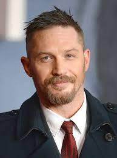
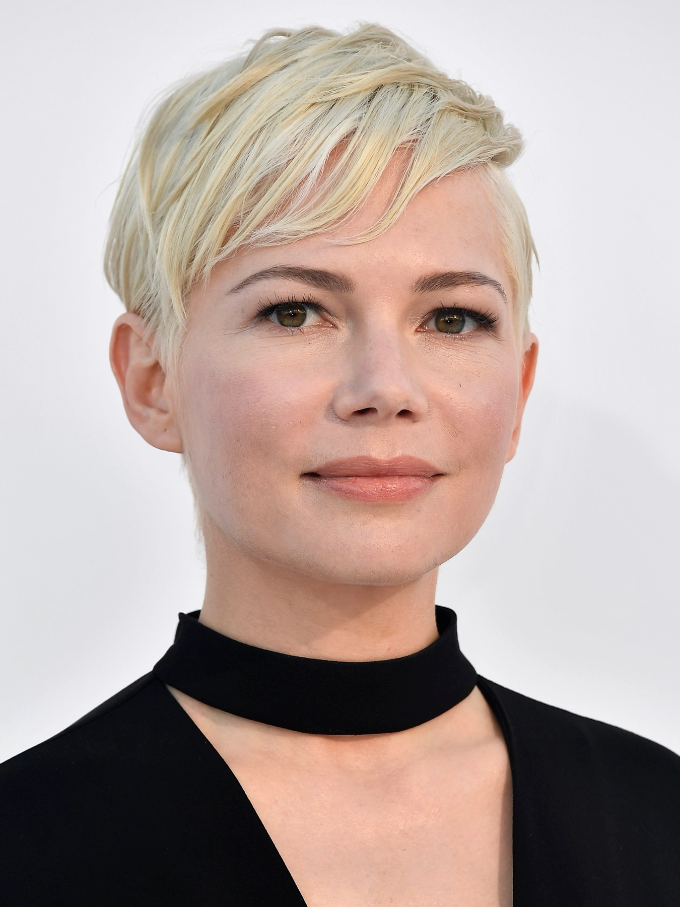
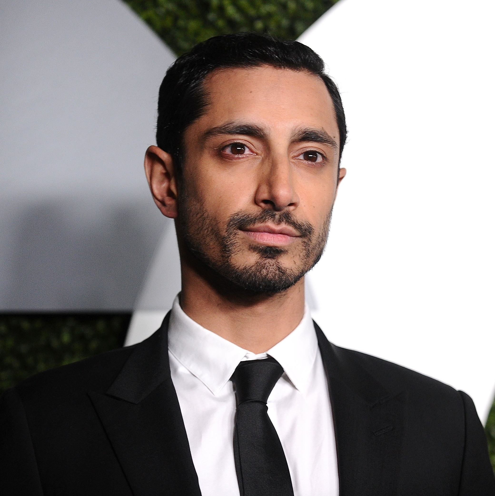
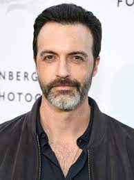

Edward Thomas Hardy, filho único, nasceu em Hammersmith, e cresceu em East Sheen, em Londres. Sua mãe, Elizabeth Anne (Barrett), é uma artista e pintora, cuja família era católica irlandesa. Seu pai, Edward "Chips" Hardy é um escritor de comédia. Hardy estudou em duas escolas particulares: na Reed's School e na Tower House School. Em 1998, venceu, aos 21 anos, o concurso The Big Breakfast's Find Me a Supermodel e foi contratado pela agência de modelos Models One. No mesmo ano conseguiu um lugar na Drama Centre London, onde também estudou o ator Michael Fassbender e teve Anthony Hopkins como mentor. No entanto não chegou a terminar o curso de representação uma vez que conseguiu um papel na série Band of Brothers.
Hardy começou sua carreira em dramas de guerra, ganhando o papel do soldado do Exército dos Estados Unidos John Janovec, na premiada minissérie da HBO e BBC Band of Brothers. Ele fez sua estreia no cinema no thriller de guerra de Ridley Scott, Black Hawk Down de 2001. Em 2003 conseguiu um papel de grande destaque a nível internacional ao interpretar o clone do capitão da USS Enterprise, Jean-Luc Picard, em Star Trek Nemesis.
No mesmo ano, foi premiado com o London Evening Standard Theatre Award de Melhor Ator em Ascensão pelo seu desempenho nas peças Blood e In Arabia We'd All Be Kings, apresentadas no Royal Court Theatre Downstairs e no Hampstead Theatre. A última peça valeu-lhe ainda uma nomeação para os prémios Olivier na categoria de Ator Mais Promissor.
Nos anos seguintes, Tom trabalhou maioritariamente com a BBC com papéis em projetos como o telefilme Sweeney Todd, a minissérie The Virgin Queen, onde interpretou o papel de Robert Dudley, um amigo de infância da rainha Isabel I da Inglaterra e o telefilme Stuart: a Life Backwards que protagonizou no papel de Stuart Shorter, um sem-abrigo sujeito a anos de abuso e que morreu de aparente suicídio. Este papel valeu-lhe uma nomeação para os BAFTA TV Awards.
Tom também teve pequenos papéis em filmes de relevo como Layer Cake, protagonizado por Daniel Craig, Marie Antoinette de Sofia Coppola, a comédia dramática Scenes of a Sexual Nature e o thriller Sucker Punch.
Em 2008 teve um papel de destaque no filme RocknRolla de Guy Ritchie e protagonizou o filme Bronson do realizador dinamarquês Nicolas Winding Refn. O filme baseia-se na história real de Charles Bronson, um prisioneiro britânico que passou a maioria da sua vida em prisão solitária. Tom ganhou quase 20 quilos de músculo para interpretar o papel e tornou-se amigo do verdadeiro Charles Bronson depois de o visitar várias vezes na prisão enquanto se preparava para o filme. O filme foi bem recebido pela crítica e Tom venceu o British Independent Film Award de Melhor Ator.
Em 2010, Tom Hardy atingiu a fama internacional com o seu papel de Eames no filme de ficção científica Inception de Christopher Nolan, um dos grandes sucessos de bilheteira e entre a crítica desse ano.
Em 2011, teve um papel de destaque no filme Tinker Tailor Soldier Spy, baseado no romance homónimo de John le Carré e onde contracenou com Gary Oldman, que Tom considera "o melhor ator de sempre" e um dos seus heróis. Protagonizou ainda o drama Warrior sobre dois irmãos separados que lutam um com o outro num campeonato de artes marciais mistas. Ainda nesse ano, Hardy venceu o BAFTA na categoria "Estrela em Ascensão".
Foi confirmado em janeiro de 2011 como o vilão Bane de The Dark Knight Rises, o terceiro filme da saga Batman dirigido por Christopher Nolan e lançado em 20 de julho de 2012. Tom disse que não se sentia pressionado a fazer um vilão melhor que o Joker de Heath Ledger e que queria apenas fazer o seu trabalho. O filme foi um sucesso de bilheteira e o Bane de Tom Hardy foi elogiado pela crítica e pelo público, tornando-se numa das personagens mais populares da saga. Nesse ano, Tom protagonizou mais dois filmes: This Means War, uma comédia de ação do realizador McG com Chris Pine e Reese Witherspoon no elenco; e Lawless, um filme de drama e crime passado na época da Grande Depressão com Shia LaBeouf e Jessica Chastain no elenco.

Williams nasceu em Kalispell, no estado americano de Montana, filha de Carla Ingrid, uma dona de casa e Larry R. Williams, um corretor de ações e commodities. Também concorreu duas vezes para o Senado dos Estados Unidos,[5] ela é descendente de noruegueses. Quando tinha nove anos sua família mudou-se para San Diego, Califórnia.
Carreira
Williams começou sua carreira no início da década de 1990, fazendo aparições em programas de televisão como Step by Step e Home Improvement. Em julho de 1994 ela estreou no cinema com o filme Lassie. Interpretou Sil (jovem), uma alien-humana que rapidamente cresce para se tornar o personagem monstro interpretado por Natasha Henstridge em Species. Em seguida, Williams participou do telefilme My Son Is Innocent (1996), que viu sua transição para um trabalho mais dramático e Killing Mr. Griffin, onde ela interpreta um membro da camarilha de Susan McConnell (interpretada por Amy Jo Johnson) em 1997.

Rizwan Ahmed nasceu em 1 de dezembro de 1982 em Wembley, no bairro londrino de Brent, descendente de uma família britânica paquistanês.[4] Seus pais são de origem Muhajir.[11] Seu pai é um corretor de remessas.[12] Seus pais se mudaram de Carachi, Sinde, Paquistão para a Inglaterra ainda na década de 1970.[4] Ele é um dos descendentes de Sir Shah Muhammad Sulaiman, o primeiro muçulmano a se tornar o presidente da Suprema Corte de Allahabad durante a era colonial.[13] Shah Sulaiman também compôs poesia em Urdu, escreveu alguns dos primeiros artigos críticos sobre a teoria da relatividade de Einstein,[14][15] e era parente de Mulla Mahmud Jaunpuri (falecido em 1652), um dos mais importantes cientistas-filósofos da região durante o Império Mogol.
Ahmed frequentou o Merchant Taylors' School, em Northwood, por meio de um programa de bolsa de estudos. Ele se formou na Christ Church, Universidade de Oxford, com um diploma em FPE (Filosofia, Política e Economia), no qual ele declarou ter sido uma "experiência bizarra". Mais tarde, ele estudou artes cênicas no Royal Central School of Speech and Drama
A carreira de Ahmed no cinema começou no filme The Road to Guantanamo de Michael Winterbottom, em que ele desempenhou o papel de Shafiq Rasul, um membro da Tipton Three. Ele e outro ator envolvido no filme foram detidos no Aeroporto de Luton ao retornarem do Festival de Cinema de Berlim, onde o filme ganhou o Prêmio Urso de Prata. Ahmed alegou que durante o interrogatório, a polícia perguntou se ele havia se tornado um ator para promover a causa islâmica, questionou-o sobre suas opiniões sobre a Guerra do Iraque, abusou verbalmente dele e negou-lhe acesso a um telefone.
Em 2007, ele interpretou Sohail Waheed para o drama do Channel 4, Britz. Ahmed então interpretou Riq na minissérie de terror da E4 Dead Set e Manesh Kunzru na série Wired da ITV1 em 2008. Também naquele ano, ele interpretou um professor de escola primária no Staffroom Monologues para o canal especialista Teachers TV. Em 2009, ele apareceu em Freefall juntamente com Sarah Harding. Ele atuou no papel-título do filme independente de 2009 Shifty, dirigido por Eran Creevy. No filme, Ahmed interpreta um jovem carismático traficante. Pelo papel, o ator foi indicado na categoria de Melhor Ator nos Prêmios British Independent Film em 2008.

Reid Scott (Albany, 19 de novembro de 1977) é um ator norte-americano.
É graduado em Cinema pela Universidade Syracuse. Atuou em comerciais de televisão antes de participar de seriados estreando em That '70s Show em 2002. Protagonizou My Boys e como convidado em American Dreams, The Secret Life of the American Teenager, Motorcity e The Big C.
voltar a página inicialDe 2012 a 2019 integrou o elenco principal da série Veep.
desenvolvido por alison peres-ifms campus dourados